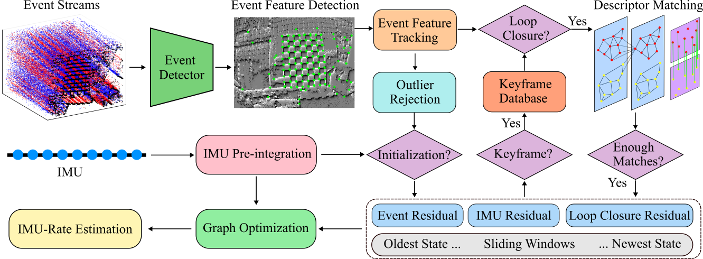

Abstract
Event cameras asynchronously output low-latency event streams, promising for state estimation in high-speed motion and challenging lighting conditions.
As opposed to frame-based cameras, the motion-dependent nature of event cameras presents persistent challenges in achieving robust event feature detection and matching.
In recent years, learning-based approaches have demonstrated superior robustness over traditional handcrafted methods in feature detection and matching, particularly under aggressive motion and HDR scenarios.
In this paper, we propose SuperEIO, a novel framework that leverages the learning-based event-only detection and IMU measurements to achieve event-inertial odometry.
Our event-only feature detection employs a convolutional neural network under continuous event streams.
Moreover, our system adopts the graph neural network to achieve event descriptor matching for loop closure.
The proposed system utilizes TensorRT to accelerate the inference speed of deep networks, which ensures low-latency processing and robust real-time operation on resource-limited platforms.
Besides, we evaluate our method extensively on multiple public datasets, demonstrating its superior accuracy and robustness compared to other state-of-the-art event-based methods.
Network Architecture
The Architecture of Our Event Feature Detector and comparison with Other Event-based Detector
The Architecture of Our Event Descriptor Matcher and Loop Closure Performance